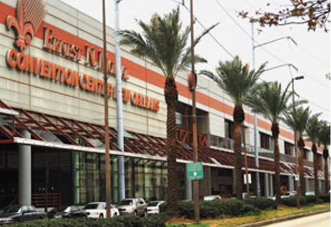

Johnnie and Oberta Baker's Photo Album Gallery Previous Next
|

We couldn't believe it. The Ernest N. Morial Convention Center was 2/3 of a mile long and 3 stories high at the south end. SC10 was sharing the building with a huge pharmacy convention so we had to go clear to the south area. Each day, we traveled ~1.17 miles just to get to the conference presentations. Luckily, Obie's mobility scooter's battery was able to handle the ~6.0 we traveled on most days- inside and outside of the center. |